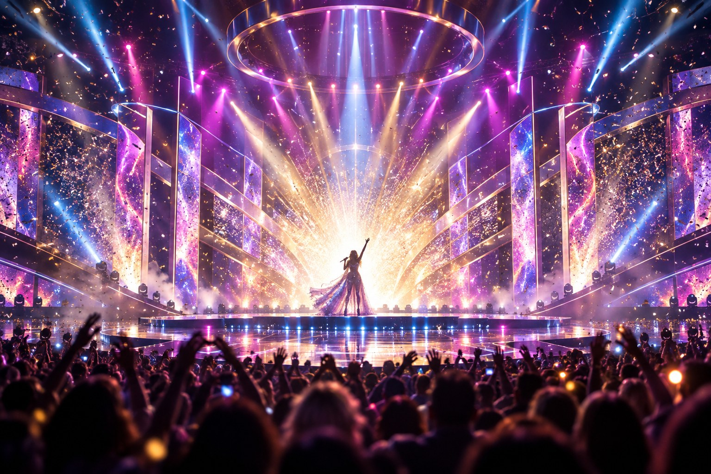

🎬 Eirovīzija un Flow – kas mums vairāk rūp: ?

Eirovīzija (2025)
Flow – septiņas minūtes animēta klusuma, kas pateica vairāk nekā visas pēdējās desmit Eirovīzijas dziesmas kopā. Bez vārdiem, bez LED sienām, tikai tēls + doma + emocija = divi Oskari & 100 festivālu balvas.
Eirovīzija – trīs minūšu troksnis, kura laikā tiek vērtēts viss izņemot pašu dziesmu: valsts, tērps, kamermirklis, stāsta mikrodozēšana.
🧩 Kāpēc Supernovā riņķo vieni & tie paši vārdi?
- Šaurs tirgus → obligātais aplis. Sudden Lights, Aminata, Markus Riva u.c. jau ir “Eirovīzijas ekosistēmā”.
- Tēlu pārstrāde, ne jauni atklājumi. Jauni balsis parādās reti – drošāks ir “pazīstamais sejas-ID”.
- Producentu pragmatisms. Reklāmu un “Zelta mikrofona” meistari labprāt palīdz LTV, jo tas nozīmē ekrāna minūtes un potenciālus strīmus.
- Rezultāts: maz eksperimenta, daudz formulas. Latvijai pietrūkst producentu, kas riskētu ārpus “konkursam der” rāmja.
❓ Ko mākslinieks patiesībā grib no Eirovīzijas?
| Motivācija | Īsais apraksts | Psiholoģiskais āķis |
|---|
| Redzamība |
Eiropas TV + YouTube desmiti miljonu skatījumu vienā naktī. |
“Rare exposure” efekts – vienreizēja megaplatforma, kas šķiet neatkārtojama. |
| Statuss |
“Es pārstāvēju valsti” – karjeras CV rinda. |
Sociālās atzinības (prestige bias) dopamīns. |
| Karjeras lifti |
Ambīcija nonākt Skandināvijas vai Nīderlandes festivālos, Spotify playlistos. |
“Gateway” ilūzija – ticība, ka viena nakts mainīs visu. |
Taču **realitātes plaisa**: skatuves sprādziens reti atbilst tam, ko klausītāji vēlas dzirdēt ikdienā. Pēc Supernovas & Eirovīzijas cilvēki atgriežas pie mākslinieka vecajiem singliem un jūtas mulsi – “Kur pazuda tā dziesma, ko klausīties piektdienas vakarā?”.
🧠 Kas notiek skatītāja galvā?
- Vizuālais primāts – smadzenes apkopo informāciju pēc “cik spilgti izskatījās” ilgāk nekā pēc “kā skanēja”. (Dual-coding theory).
- Heimat-efekts – automātiska vēlme balsot “par savējiem”, pat ja dziesma nav favorīte.
- Sociālais spogulis – publika vērtē, kā dziesma izskatīsies “meme-kadrā” sociālajos tīklos, nevis vai tā skanēs Spotify pleilistē.
Rezultātā Eirovīzijas tēls – labs vai slikts – pielīp kā etikete. Un tas nereti neatbilst mākslinieka īstajai skaņai (piemēram, “Bur man laimi” pret “Debesis iekrita tevī” disonanse).
🎭 Kur tad īsti ir “sāls”?
| # | “Konkurss” pret realitāti | Ko tas nozīmē praksē? |
|---|---------------------------|------------------------|
| 1 |
“Labākā dziesma” uzvar | Uzvar kompleksa kombinācija: valsts tēls + šoks + kamera + politika. |
| 2 |
3 minūšu limits | Nepieciešams “WOW!” 10 sekundēs → reti pārdzīvo Spotify filtrus. |
| 3 |
Vienots sacensību lauks | Faktiski dažādas “līgas”: Zviedrijas pop-fabrika, politiskie vēstījumi, folk-identitātes utt. |
| 4 |
Skatītāji vērtē mūziku | Skatītāji balso kā “X Faktorā”: par to, kas aizkustināja vai uzspridzināja vizuāli. |
🎯 Kopsavilkums
Eirovīzija šodien ir skaļš karnevāls: visi kliedz “Skaties uz mani!”, bet patiesu saturu dzirdam reti.
Flow klusē – un tieši tāpēc sasniedz dziļāk.
Ja Latvija spēj uzvarēt pasauli ar animācijas poētiku, kāpēc mums jāspēlē pēc “Zviedrijas popmašīnas” formulas?
Un, vēl svarīgāk – vai šī spēle vispār vēl ir par mūziku?